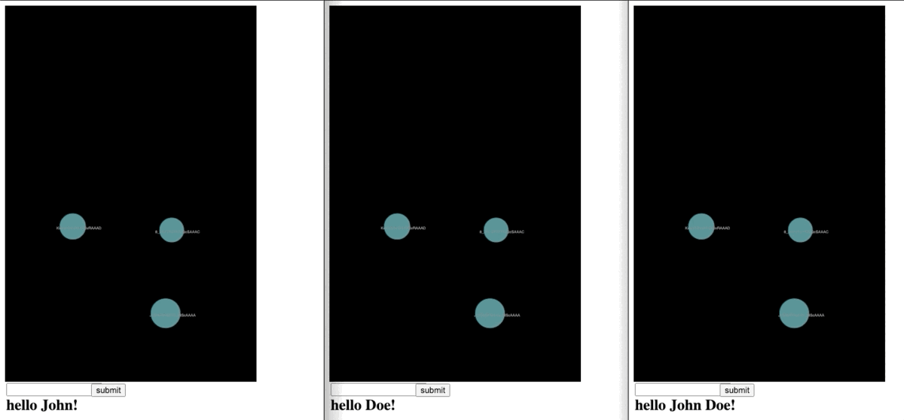
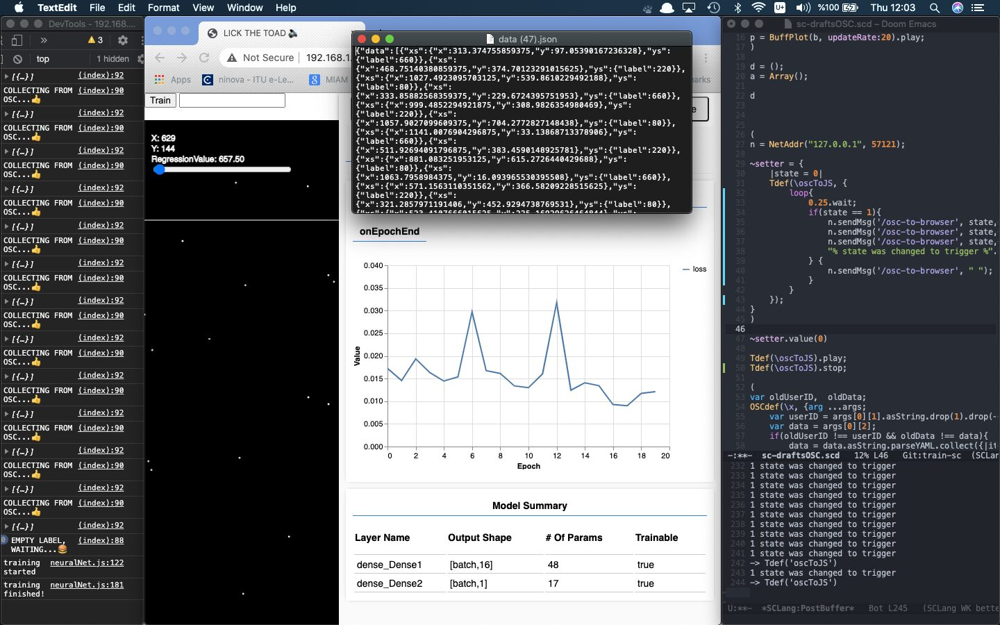
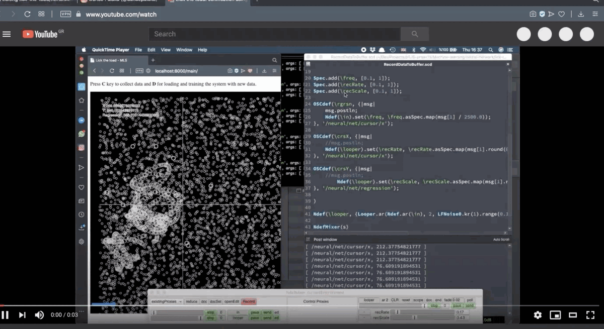

Lick The Toad
——————————————————————————————————————————-
Lick The Toad: A web-based Interface for collective sonification
Dr. Konstantinos Vasilakos Istanbul Technical University Center for Advanced Studies in Music
1. PubPub Link
https://nime.pubpub.org/pub/lick-the-toad-konvas-nime2021/draft?access=p2mo1i5k
2.Conference Abstraction
Lick the Toad is an ongoing project using machine learning to create collective sonification in the browser. It is developed using web technologies and thus it can run in any modern browser. It provides an interface and a main visualization platform to collect user data that are connected via their smartphone or any other mobile device. It is developed as an open-source project found at this link (https://konvas.github.io/lick-the-toad/). The system offers a tool for interactive/collective sonification amongst users alike. It can be used in various contexts, such as an onsite installation, or as an interactive compositional tool, as well as for the distribution of raw data for live coding performances. The inputs and targets of the training processes can be adapted according to the needs of the use making it a versatile component for creative practice and sonic interactions. Sound can be integrated in the app, however, coming from a Sonic Arts background the author has tested thus far using external sound synthesis environments to run sonifications in real time.
3.Requirements (optional, especially for the performance on-site)
None.
4.Program Description
Lick the Toad offers an interface to interact with other connected users and share their positions amongst them in the same network. The interface can be accessed from a URL of their device, from a web-browser. Initial designs and working example of the interface can be seen below.
While the user is interacting and watching the others location, the system is able to collect the data and render it to train a model at will, or it can use a previous model trained earlier. This data provides X and Y positions of the user’s element (as seen below). For the target is also defined by the user, that is, the classification of all the data which will be used as an output for the model.


Lickthetoad: User interface version:1.
Many iterations have been created thus far, at the moment the interface is at this state:
At the left, the main interface combines visually the incoming data of all users and their activity. Once the system completes the collection of the data, as seen above, it may start the training process. Using the left window, one can monitor the incoming values and draw some interesting visualizations alike before embarking on training a model. Training process is shown in the next image, using dummy data from SuperCollider’s patterns and communicated via OSC and the server running.


Collection of training data: triggering dummy values from SuperCollider for training tests.
While MLJS library is used for building the neural net, the library offers a monitor window to track the training process and other info, e.g., epochs progress and loss, training process is finalized, the interface switch to the prediction state providing a regression float number, that is a continuous value between the labels, which is relative to the position of the X and Y position of the cursor in the interface. Regression provides a continuous float number between data points instead of a binary classification value. This is helpful for more appealing mapping associations between the output and the sound synthesis parameters. For example, assuming the cursor is between two points that are logged as low (=80.0) and mid (=220.0) the system will provide a value according to the proximity of low and mid. Unless one wants to triggers specific sounds using standard prediction.
One can select between two modes of interaction, that is the automatic and the manual predictions. A Perlin noise operator of P5JS that controls the X and Y positions moves the cursor scanning randomly selection points illustrated as follows:


Prediction process: automatic control of cursor with Perlin noise generaror (P5JS).
The project is build in JavaScript and uses ML5 (https://ml5js.org) machine learning library built on top of Tensorflow (https://www.tensorflow.org). The library provides a set of tools for machine learning utilization in web-browsers. It is developed as a cross platform and runs on any modern web-browser. At the moment, it runs as a NodeJS application and communicates via an embedded local server, also tested on a RaspberryPI 3 model: B+. The visualizations are build using P5.JS (https://p5js.org). Finally, for the communication between the browser and SuperCollider (https://github.com/supercollider) the platform uses Socket.io (https://socket.io), and OSC.js (https://github.com/colinbdclark/osc.js).
The application is at the stage of testing and running it locally in NodeJS. While it is an ongoing project adapted constantly upon the requirements of projects, it may host diverse inputs and outputs to provide predictions alike e.g., triggered and fed using SuperCollider’s patterns, or sensors’ outputs. Next steps include the deployment of the platform as an online app, to host remote interactions amongst users via internet and distribute data to various sound generative clients, e.g., live coders and other performers.
5. Media
Some videos highlighting the systems capabilities are listed as follows:
6. ACKNOWLEDGEMENTS
The author would like to thank the ML5JS community and Daniel Shifman for their tutorials and supportive materials about ML5JS and P5JS respectively.